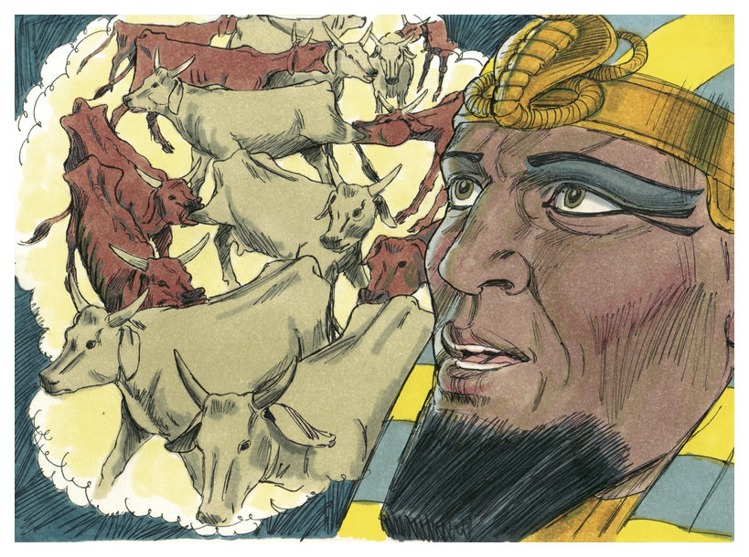
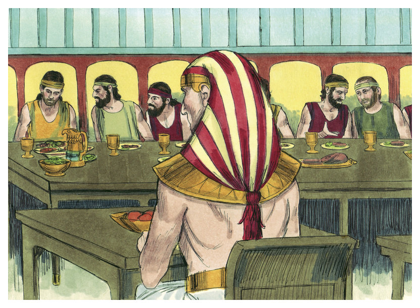
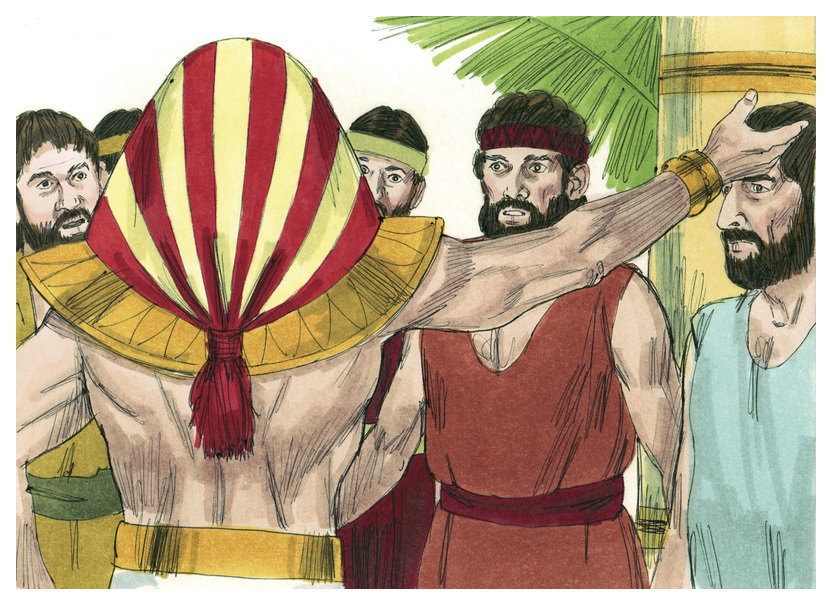
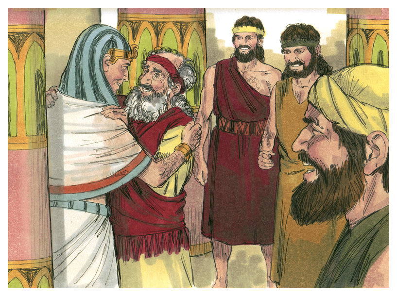
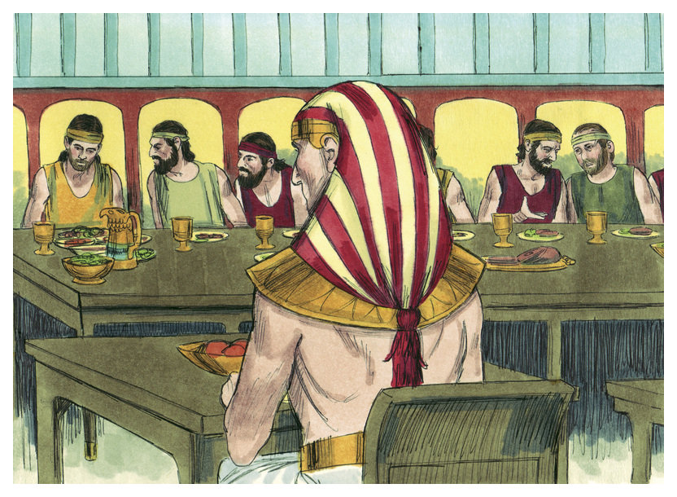
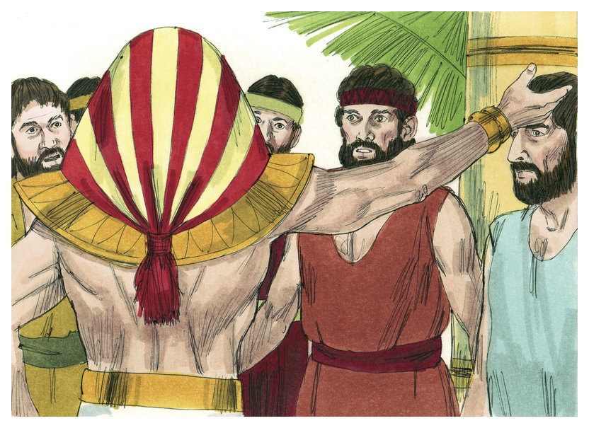
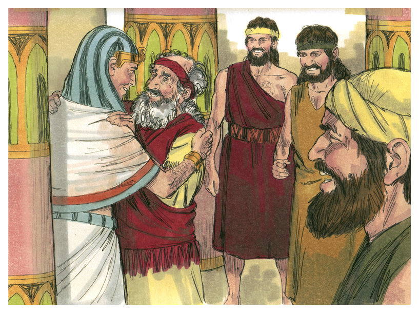

Allah memberkati Yusuf
(Kejadian 39-45)
Yusuf tidak selayaknya dipenjara oleh bekas tuannya Potiphar. Di penjara, Yusuf sangat taat dan penolong. Penjaga penjara memberikan kepercayaan kepadanya untuk mengatur kehidupan penjara. Karena Allah beserta Yusuf, penjara menjadi tempat yang lebih baik bagi semua penghuninya.
Tukang roti dan kepala rumah tangga raja berada di penjara juga. "Kenapa kalian sedih?" Tanya Yusuf kepada mereka. "Tidak seorangpun dapat menunjukan arti mimpi-mimpi kami" Jawab mereka. "Allah dapat" Jawab Yusuf. "Ceritakan mimpi-mimpi mu."
"Mimpi-mimpi mu mengartikan bahwa tiga hari lagi Raja Firaun akan mengambilmu kembali" Kata Yusuf kepada kepala rumah tangga. "Tolong ingat akan aku dan mintakan ke Firaun untuk membebaskan ku" Kata Yusuf.
Mimpi tukang roti merupakan berita buruk. "Anda akan mati dalam tiga hari" Kata Yusuf. Kedua mimpi-mimpi itu pun menjadi kenyataan.
Akan tetapi kepala rumah tangga lupa akan Yusuf, sampai suatu ketika Firaun bangun pagi hari dengan hati risau.
"Aku bermimpi" Ia berseru. Tidak seorangpun dari orang bijaknya yang dapat mengartikan mimpinya. Kemudian kepala rumah tangga ingat akan Yusuf. Ia bercerita ke Firaun tentang Yusuf.
Segera Firaun menyuruh memanggil Yusuf untuk menceritakan tentang arti mimpinya itu.

"Mimpi mu merupakan pesan dari Allah" Kata Yusuf kepada raja. "Mesir akan mempunyai tujuh tahun panen besar, kemudian tujuh tahun panen buruk dan kekurangan makanan. Rencanakan sekarang ini untuk menyimpan makanan selama tujuh tahun yang baik, atau pendudukmu akan menderita kelaparan pada saat panen buruk." Kata Yusuf menasihati Firaun.
"Allah beserta mu, kau akan memimpin di Mesir, orang kedua setelah aku."
 Tujuh tahun yang baik datang. Kemudian datang tujuh tahun kelaparan. Kekurangan makanan dimana-mana kecuali di Mesir, mereka secara bijak menyimpan banyak makanan. Di tempat kelahiran Yusuf, keluarganya juga kelaparan.
Orang-orang dari Negara lain pergi ke Mesir untuk membeli jagung. "Kamu harus pergi juga, atau kita akan mati kelaparan." Yakub menyuruh anak-anaknya. Tiba di Mesir, anak-anaknya menyiapkan diri untuk membeli makanan.
Anak-anak Yakub membungkukkan badan dengan penuh hormat didepan Tuan besar yang berkuasa di Mesir. Mereka tidak tahu kalau itu adik mereka Yusuf. Tetapi Yusuf mengenalinya. Yusuf ingat akan mimpi semasa kanak-kanak, yaitu Tuhan akan mengangkatnya menjadi lebih dari kakak-kakaknya.
Yusuf sangat bijaksana. Ia berbicara dengan kasar dan menahan Simeon kakaknya sebagai sandera. "Ambil makanan, terus pulang dan kembali kesini dengan adik yang paling muda, dengan begitu saya tahu kalau kalian bukan mata-mata." Perintah Yusuf kepada mereka.
Kakak-kakaknya berpikir bahwa Allah akan menghukum mereka karena menjual Yusuf sebagai budak beberapa tahun lalu.
Yakub dan anak-anaknya bingung. "Uang kami ditukar untuk jagung dan penguasa mengatakan harus membawa Benyamin" Yakub tidak akan melepaskan Benyamin pergi. Tetapi begitu makanan sudah mulai habis, kakak-kakaknya harus pergi ke mesir lagi. Benyamin pergi bersama mereka.

Ketika Yusuf melihat Benyamin ia memerintahkan pembantu-pembantunya untuk pesta besar. Kakak-kakaknya juga diundang. "Apakah ayahmu masih hidup dan sehat?" Tanya Yusuf. Kemudian ia berpikir bagaimana caranya membawa seluruh keluarganya ke Mesir.
Yusuf juga ingin tahu jika kakak-kakaknya merasa menyesal dengan dosa mereka beberapa tahun lalu. Setelah pesta ia menuduh mereka mencuri. "Untuk menghukum kalian, aku akan menahan Benyamin sebagai budakku" Kata Yusuf.
"Tuan ku, ambillah nyawaku sebagai penggantinya" Kata Judah. Yusuf mengetahui bahwa Judah yang dahulu mengusulkan untuk menjual Yusuf, sesungguhnya sudah berubah.
Tidak dapat lagi menyembunyikan ke cintaannya terhadap keluarganya, Yusuf menyuruh semua yang berbangsa Mesir keluar dari ruangan. "Akulah Yusuf saudaramu yang kalian jual ke Mesir."
Terkejut dan ketakutan, kakak-kakaknya terdiam. Namun Yusuf menyemangati kakak-kakaknya.

"Allah yang membuat aku jadi pembesar di Mesir, agar aku bisa menyelamatkan jiwa kalian dimasa kelaparan. Pergi, bawalah ayahku. Aku yang akan mengurus kalian."

Yakub dan Yusuf berkumpul kembali di Mesir dan seluruh keluarga tinggal disana dengan damai.
Tujuh tahun yang baik datang. Kemudian datang tujuh tahun kelaparan. Kekurangan makanan dimana-mana kecuali di Mesir, mereka secara bijak menyimpan banyak makanan. Di tempat kelahiran Yusuf, keluarganya juga kelaparan.
Orang-orang dari Negara lain pergi ke Mesir untuk membeli jagung. "Kamu harus pergi juga, atau kita akan mati kelaparan." Yakub menyuruh anak-anaknya. Tiba di Mesir, anak-anaknya menyiapkan diri untuk membeli makanan.
Anak-anak Yakub membungkukkan badan dengan penuh hormat didepan Tuan besar yang berkuasa di Mesir. Mereka tidak tahu kalau itu adik mereka Yusuf. Tetapi Yusuf mengenalinya. Yusuf ingat akan mimpi semasa kanak-kanak, yaitu Tuhan akan mengangkatnya menjadi lebih dari kakak-kakaknya.
Yusuf sangat bijaksana. Ia berbicara dengan kasar dan menahan Simeon kakaknya sebagai sandera. "Ambil makanan, terus pulang dan kembali kesini dengan adik yang paling muda, dengan begitu saya tahu kalau kalian bukan mata-mata." Perintah Yusuf kepada mereka.
Kakak-kakaknya berpikir bahwa Allah akan menghukum mereka karena menjual Yusuf sebagai budak beberapa tahun lalu.
Yakub dan anak-anaknya bingung. "Uang kami ditukar untuk jagung dan penguasa mengatakan harus membawa Benyamin" Yakub tidak akan melepaskan Benyamin pergi. Tetapi begitu makanan sudah mulai habis, kakak-kakaknya harus pergi ke mesir lagi. Benyamin pergi bersama mereka.

Ketika Yusuf melihat Benyamin ia memerintahkan pembantu-pembantunya untuk pesta besar. Kakak-kakaknya juga diundang. "Apakah ayahmu masih hidup dan sehat?" Tanya Yusuf. Kemudian ia berpikir bagaimana caranya membawa seluruh keluarganya ke Mesir.
Yusuf juga ingin tahu jika kakak-kakaknya merasa menyesal dengan dosa mereka beberapa tahun lalu. Setelah pesta ia menuduh mereka mencuri. "Untuk menghukum kalian, aku akan menahan Benyamin sebagai budakku" Kata Yusuf.
"Tuan ku, ambillah nyawaku sebagai penggantinya" Kata Judah. Yusuf mengetahui bahwa Judah yang dahulu mengusulkan untuk menjual Yusuf, sesungguhnya sudah berubah.
Tidak dapat lagi menyembunyikan ke cintaannya terhadap keluarganya, Yusuf menyuruh semua yang berbangsa Mesir keluar dari ruangan. "Akulah Yusuf saudaramu yang kalian jual ke Mesir."
Terkejut dan ketakutan, kakak-kakaknya terdiam. Namun Yusuf menyemangati kakak-kakaknya.

"Allah yang membuat aku jadi pembesar di Mesir, agar aku bisa menyelamatkan jiwa kalian dimasa kelaparan. Pergi, bawalah ayahku. Aku yang akan mengurus kalian."

Yakub dan Yusuf berkumpul kembali di Mesir dan seluruh keluarga tinggal disana dengan damai.
Kembali